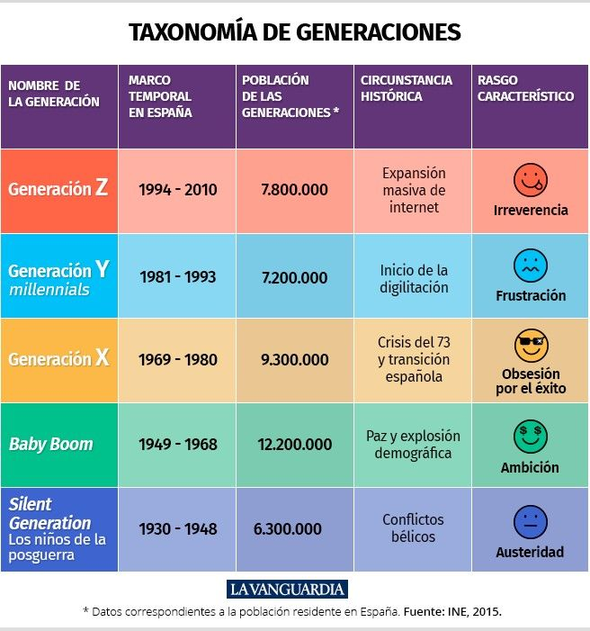

Modelando Clases
Generaciones
Crea una clase llamada Persona que siga las siguientes condiciones:
Sus propiedades son: nombre, edad, DNI, sexo (H hombre, M mujer), peso y altura, año de nacimiento. Si quieres añadir alguna propiedad extra puedes hacerlo.
Los métodos que se debe poder utilizar son:
mostrarGeneracion: este método debe mostrar un mensaje indicando a qué generación pertenece la persona creada y cual es el rasgo característico de esta generación.
Para realizar este método tener en cuenta la siguiente tabla de generaciones:
esMayorDeEdad: indica si es mayor de edad, devuelve un mensaje indicando que la persona es mayor de edad.
mostrarDatos: devuelve toda la información del objeto.
generaDNI(): genera un número aleatorio de 8 cifras.
Resultado:
Ir al ejercicio anterior Ir al siguiente ejercicio